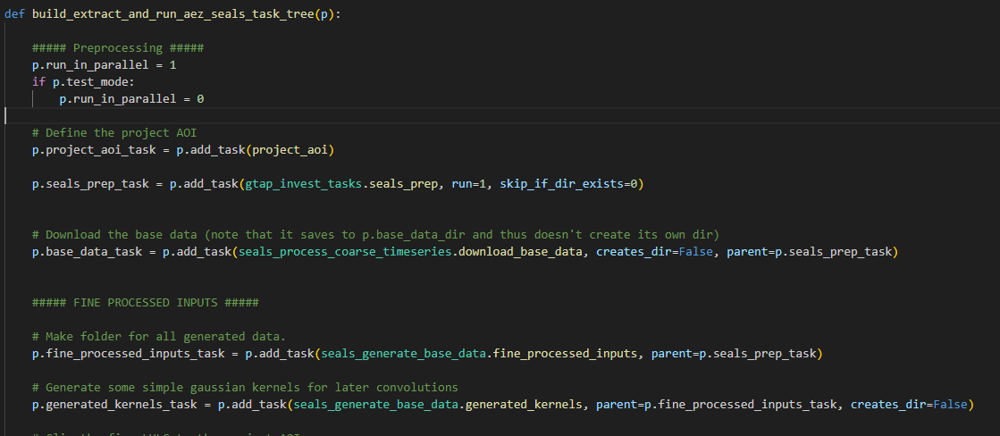
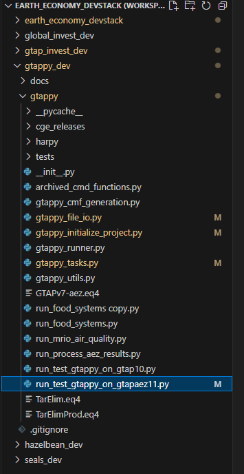
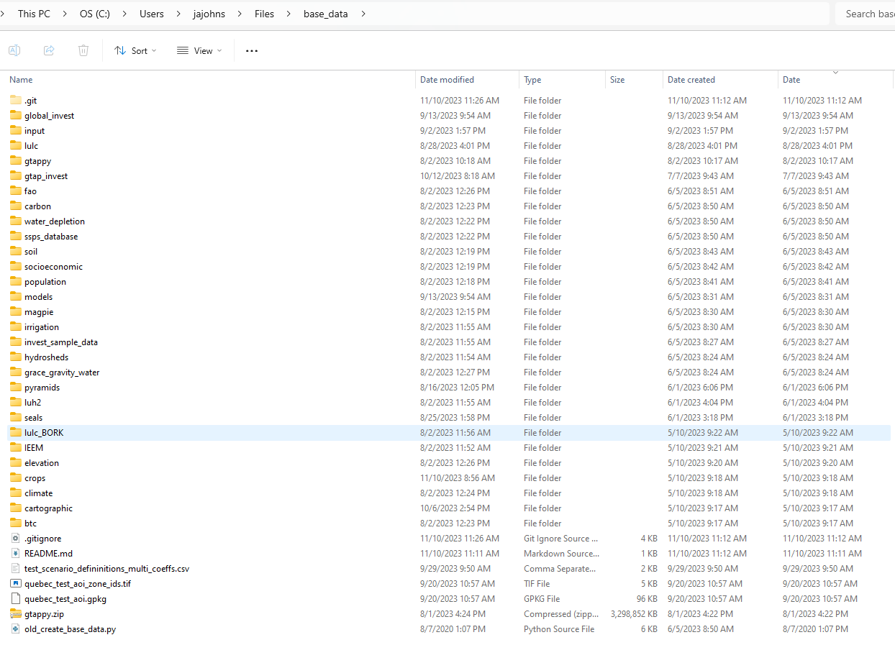
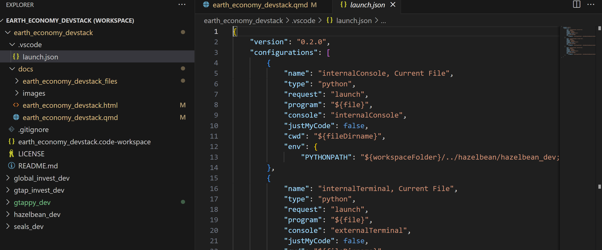
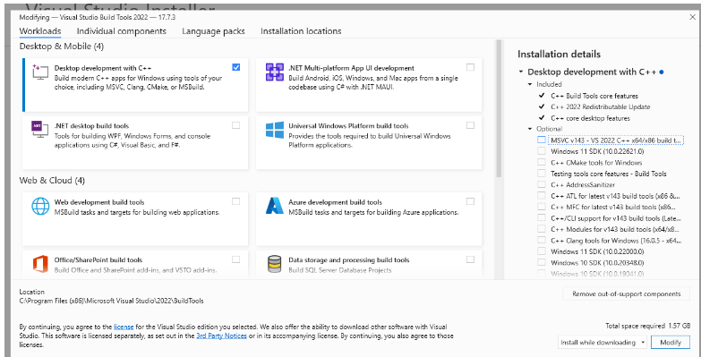
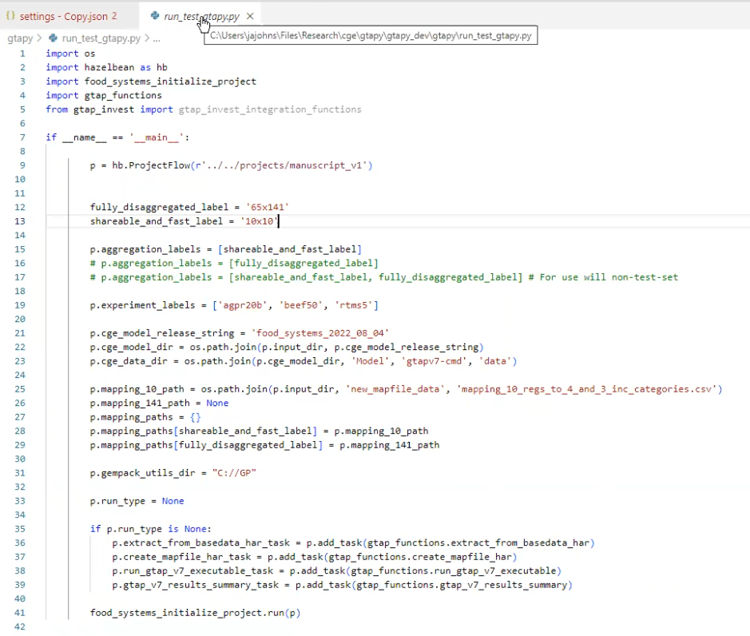

p.lulc_correspondence_dict = hb.utils.get_reclassification_dict_from_df(p.lulc_correspondence_path, 'src_id', 'dst_id', 'src_label', 'dst_label')Earth-Economy Devstack
Placeholder file that will collect the cross-repo organizational standards common to our software stack
Id, index, label, name, description
In programming, id and index are two different concepts that are used in different contexts.
id refers to the unique identifier of an object. In this specification, it is an integer that is sorted by the ONE in the many-to-one correspondence, sorted alphabetically at generation time (though not necessarily to remain sorted given downstream correspondences).
index refers to the position of an element in a sequence (e.g. a list or a string). In the context of a correspondence file, this is the position of the row within the sorted spreadsheet, but is not assumed to be stable and shouldn’t generally be used.
labelheader refers to an (exactly) 4 character string that is lowercase-alphanumeric with no special symbols besides underscore. Useful for the Header label in har files. Technically is case insensitive but we assume lowercase.
labelshort refers to an 8-character or less string that is lowercase-alphanumeric with no special symbols besides underscore. Useful for .har files.
label refers to a string that is lowercase-alphanumeric with no special symbols besides underscore
name refers to a string of any ascii characters with python-style escaping of special characters: 'She\'s a star!' . It’s assumed to be short enough to view as a column header or plot label
Description refers to a name of any length with detailed description, possibly even formatted MD text.
If there is a domain, described below, id, index, etc all should prepended with it to be eg gadm_id.
Id, Index etc. in the context of vector data
Note that geopandas assumes the vector data are indexed with an FID. This is the order in which the geometries are added to the file and can get wonky when dealing with legacy file types (like ESRI Shapefiles). Additionally, when you write a GPKG to a CSV, it will not include the fid, so you might lose data. To fix this, EE spec requires that any GPKG when saved as a CSV have a new column, id added as the first col, which is generated starting at 1 and incrementing up by 1 after having sorted the data on the simplest non-fid label (e.g., iso3_label). See gtap_invest_generate_base_data.py.
Labels files
Based on how the GTAP database is structured, EE spec defines several file types of files to systemetize how dimensions/sets are defined (and then used in e.g. figure plotting). A single dimension is first defined by a labels file. The labels file has at least 3 columns of domain_id, domain_label, domain_name and optionally a domain_description. If present, a column needs to be fully filled (no missing values). Label files are used in other contexts to, e.g., go from id to name for labeling an axis on a plot, as well as building the correspondence files below.
Correspondences
Model linkages often require mapping many-to-one relationship in a consistent way. Correspondence files define this via a src-to-dst (source and destination). They are named according to a relatively complex pattern. Specifically, using the file path gadm_r263_gtapv7_r251_r160_r50_correspondence, we have a domain label gadm followed by
- a
srcdimension-size pairr263(where r is a label, short for region in this case, and 263 is the number of unique entries in that dimension). To be a correspondence,there needs to be at least one otherdstdimension-size pair, where in this case there are 3 additional dimension-size pairs (r251,r160, andr50). However, the later three pairs are from a different domain, namely that ofgtapv7. Each pair is identified with the domain most identified most closely prior. - The
dstdimension-size pairs are sorted in order of decreasing size. Thedstdimension-size pairs are then followed by the wordcorrespondence. This example creates a correspondence file that maps from the GADM 263 regions to the GTAPv7 251 regions, which are then mapped to the GTAPv7 160 regions, which are then mapped to the GTAPv7 50 regions.
An example of a 2-type correspondence is below. However, in this file, src and dst would have to be replaced with the specific domain names used.
| src_id | dst_id | src_label | dst_label | src_description | dst_description |
|---|---|---|---|---|---|
| 1 | 1 | aus | oceania | Australia | Oceania (including NZ and AUS) |
| 2 | 1 | nzl | oceania | New Zealand | Oceania (including NZ and AUS) |
Here are the specific labels and corespondence files generated for gtapv7-aez-rd:

If defined exactly right, 2 dimensional correspondence files will work with Hazelbean via
seals_utils.set_derived_attributes(p)
and
which will return a very useful dictionary for various reclassification tasks:
return_dict = {}
return_dict['dst_to_src_reclassification_dict'] = dst_to_src_reclassification_dict # Dict of one-to-many keys to lists of what each dst_key should be mapped to from each src_key. Useful when aggrigating multiple layers to a aggregated dest type
return_dict['src_to_dst_reclassification_dict'] = src_to_dst_reclassification_dict # Useful when going to a specific value.
return_dict['dst_to_src_labels_dict'] = dst_to_src_labels_dict # Dictionary of lists of labels that map to each dst label
return_dict['src_ids'] = remove_duplicates_in_order(src_ids) # Unique set of src_ids
return_dict['dst_ids'] = remove_duplicates_in_order(dst_ids) # Unique set of dst_ids
return_dict['src_labels'] = remove_duplicates_in_order(src_labels) # Unique set of src_labels
return_dict['dst_labels'] = remove_duplicates_in_order(dst_labels) # Unique set of dst_labels
return_dict['src_ids_to_labels'] = {k: v for k, v in zip(return_dict['src_ids'], return_dict['src_labels'])} # one-to-one dictionary of src ids to labels
return_dict['dst_ids_to_labels'] = {k: v for k, v in zip(return_dict['dst_ids'], return_dict['dst_labels'])} # one-to-one dictionary of dst ids to labels
return_dict['src_labels_to_ids'] = {k: v for k, v in zip(return_dict['src_labels'], return_dict['src_ids'])} # one-to-one dictionary of src labels to ids
return_dict['dst_labels_to_ids'] = {k: v for k, v in zip(return_dict['dst_labels'], return_dict['dst_ids'])} # one-to-one dictionary of dst labels to idsAmong other possibilities, this could be used for reclassifying LULC geotiffs via
rules = p.lulc_correspondence_dict['src_to_dst_reclassification_dict']
hb.reclassify_raster_hb(raster_path, rules, output_path)Correspondences with geometries
# The rules for naming correspondences are a little different when adding geometry to the data. Because
# only 1 geometry can be assigned per file, and becasue membership of aggregated regions and their
# members can get confusing, each correspondence file keeps all the labels but then is also saved along
# with a geometry file that drops the other labels (and the word correspondence in the filename).
p.ee_r264_correspondence_vector_path = p.get_path(os.path.join('gtap_invest', 'region_boundaries', 'ee_r264_correspondence.gpkg'))
p.ee_r264_vector_path = p.get_path(os.path.join('gtap_invest', 'region_boundaries', 'ee_r264.gpkg'))Naming Conventions
The names of project-level variables are carefully defined. For example, in gtapv7_r251_r160_correspondence_input_path, the input when put right before the word path implies it is a raw asset we obtained from an external source but haven’t processed it yet. This means that it can be a non-compliant XLSX file. Aslo, path implies that it is a string type that points to a location in a storage device. In this name, we see two other structures. First, the gtapv7 label indicates the “domain” of the correspondence defined in all of the following dimensions (until another domain label). Above, this means that it is the 251 regions, as defined by the gtapv7 domain, mapped to the 160 regions in the same domain.
You can have multiple mappings in a single correspondence file. For example, gtapv7_r251_s65_r50_s26_correspondence_input_path, we are mapping r251 to r50 and s (sectors) 65 to s26, all in the gtapv7 domain.
Appart from correspondence files, we also have labels files, such as gtapv7_r251_labels_path. Labels files are for a single set/variable/dimension but map together the synonymous categorizers. Specifically, it must have an id, label, and name, all filled out for every entry. It can optionally have others like description.
In the filename gtapv7_r251_labels_path we extract from the input_path and write a EE-compliant labels table for the gtapv7 r251 set. In the filename gtap11_gtapaez11_region_correspondence_path, we use these regions and then connect it to the gtapaez11 labels. We can infer also that it is from a mapping labeled gtap11 to gtapaez11 and that the variable in question is the regions while the word correspondence then indicates this is a many-to-one mapping file.
Note that the file path says “regions” while the column label in the CSV says “region”.
p.gtap11_region_correspondence_input_path = os.path.join(p.base_data_dir, 'gtappy', 'aggregation_mappings', 'GTAP-ctry2reg.xlsx')
p.gtap11_region_names_path = os.path.join(p.base_data_dir, 'gtappy', 'aggregation_mappings', 'gtap11_region_names.csv')
p.gtap11_gtapaez11_region_correspondence_path = os.path.join(p.base_data_dir, 'gtappy', 'aggregation_mappings', 'gtap11_gtapaez11_region_correspondance.csv')Task Format
Project flow requires a consistent format for tasks. The following is an example of a task that creates a correspondence file from gtap11 regions to gtapaez11 regions. The task itself defined as a function that takes a p object as an argument. This p object is a ProjectFlow object that contains all the project-level variables, manages folders and files, and manages tasks and parallelization. p also includes documentation, which will be written directly into the task directory.
Also note that any project-level attribute defined in between the function start and the if p.run_this: component are the “project level variables” that are fair-game for use in other tasks. These paths are critical for high performance because they enable quick-skipping of completed tasks and determiniation of which parts of the task tree need rerunning.
Tasks should be named as a noun (this breaks Python pep8 style) referencing what will be stored in the tasks output dir. This might feel awkward at first, but it means that the resultant file structure is easier to interpret by a non-EE outsider.
def gtap_aez_seals_correspondences(p):
p.current_task_documentation = """
Create correspondence CSVs from ISO3 countries to GTAPv11 160
regions, and then to gtapaezv11 50ish regions, also put the classification
for seals simplification and luh.
"""
p.gtap11_region_correspondence_input_path = os.path.join(p.base_data_dir, 'gtappy', 'aggregation_mappings', 'GTAP-ctry2reg.xlsx')
p.gtap11_region_names_path = os.path.join(p.base_data_dir, 'gtappy', 'aggregation_mappings', 'gtap11_region_names.csv')
p.gtap11_gtapaez11_region_correspondence_path = os.path.join(p.base_data_dir, 'gtappy', 'aggregation_mappings', 'gtap11_gtapaez11_region_correspondance.csv')
if p.run_this:
"logic here"Automatic Directory Organization via Tasks
Hazelbean automatically defines directory organization as a function of the task tree. When the ProjectFlow object is created, it takes a directory as its only required input. This directory defines the root of the project. The other directory that needs to be referenced is the base_data_dir. When you initialize the p object, it notes this:
Created ProjectFlow object at C:\Users\jajohns\Files\gtap_invest\projects\cwon from script C:\Users\jajohns\Files\gtap_invest\gtap_invest_dev\gtap_invest\run_cwon.py with base_data set at C:\Users\jajohns\Files/base_dataIn the run file, the following line generates the task tree:
gtap_invest_initialize_project.build_extract_and_run_aez_seals_task_tree(p)
Which points to a builder function in the initialize file, looking something like this:

This would generate the following task tree:

Two notations are especially useful within this task tree.
- Within the function that defines a task,
p.cur_dirpoints to the directory of that task. So for instance, the last task defined in the image above, in its code, you could referencep.cur_dir, and it would point to<project_root>/econ_vizualization/econ_lcovercom - Outside of a given function’s code, you can still refer to paths that were defined from within the functions code, but now (because you are outside the function) it is given a new reference. Using the example above, you could reference the same directory with
p.econ_lcovercom_dirwhere the p attribute is named exactly as\<function_name\>\_dir
All of this setup enable another useful feature: automatic management of file generation, storage and downloading. This is done via the hazelbean function:
useful_path = hb.get_path(relative_path)This function will iteratively search multiple locations and return the most “useful” one. By default, the relative_path variable will first joined with the p.cur_dir. If the file exists, it returns it. If not, it checks the next location, which is p.input_dir, and then p.base_data_dir. If it doesn’t find it anywhere, it will attempt to download it from google cloud (NYI) and save it in the p.cur_dir. If it is not available to download on google cloud, then it treats the path as something we will be generating within the task, and thus, get_path returns the first option above, namely joining the relative_path with p.cur_dir.
One exception to this is if you are calling get_path outside of a task/task_tree. One common example is in the run file before you build the task tree. In this case, the default_dirs will not make sense, and so you need to specify it manually as here:
p.countries_iso3_path = p.get_path(os.path.join('cartographic', 'gadm', 'gadm_adm0_10sec.gpkg'), possible_dirs=[p.input_dir, p.base_data_dir])Validation of files
ProjectFlow is designed to calculate very fast while simultaneously validating that everything is approximately correct. It does this by checking for the existence of files (often combined with hb.get_path()). For example
p.gadm_r263_gtapv7_r251_r160_r50_correspondence_vector_path = p.get_path(os.path.join('gtap_invest', 'region_boundaries', 'gadm_r263_gtapv7_r251_r160_r50_regions.gpkg'))
if not hb.path_exists(p.gadm_r263_gtapv7_r251_r160_r50_correspondence_vector_path):
hb.log('Creating ' + p.gadm_r263_gtapv7_r251_r160_r50_correspondence_vector_path)
"computationally expensive thing here."ProjectFlow very carefully defines whether or not you should run something based on the existence of specific paths. Usually this is just checking for each written path and only executing the code if it’s missing, but in some cases where lots of files are created, it’s possible to take the shortcut of just checking for the existence of the last-created path.
Eliminating redundant calculation across projects
If you have a time consuming task that, or example, writes to
big_file_path = hb.get_path('lulc', 'esa', 'seals7', 'convolutions', '2017', 'convolution_esa_seals7_2017_cropland_gaussian_5.tif' )In this example, suppose you needed to create this file via your create_convolutions() task or something. When you first do this, it obviously won’t exist yet, so get_path() will join that relative path in the p.cur_dir location. If you run the ProjectFlow again, it will see it’s there and then instantly skip recalcualting it.
EE File organization
If you have the same directory structure by putting the 5 folders: gtap_invest, gtappy, hazelbean, seals,global_invest, and the devstack folder earth_economy_devstack folder under your customized Files folder, for example like this:
C:\Users\jajohns\Files\
Then everytime, you can only change the path C:\Users\jajohns\ before Files without changing the path in the code.


In addition to the 5 repos plus the EE repo, there is a managed base data set stored in the same location


NOTE: If you are developer of one of the five tools, then you should have a _dev folder inside of the repo folder. For example, if you are a developer of gtappy, then you should have a gtappy_dev folder inside of the gtappy folder. The launch.json file in the EE devstack folder will helps you to open all the corresponding file for the workspace automatically.

GTAPpy details
Installation
Cython Installation




Run-GTAP installation simple for class
Step 1:
Install RunGTAP at https://www.gtap.agecon.purdue.edu/products/rungtap/default.asp
At https://www.copsmodels.com/gpeidl.htm download: https://www.copsmodels.com/ftp/ei12dl/gpei-12.1.004-install.exe
- OR FOR VERSION 12: https://www.copsmodels.com/ftp/ei12dl/gpei-12.0.004-install.exe
Install to default location

Proceed without selecting a license (to start the 6 month trial).
Step 2: Install GTAPAgg2: https://www.gtap.agecon.purdue.edu/private/secured.asp?Sec_ID=1055
TO PROCEED, YOU NEED TO HAVE A ACCESS TO THE GTAP DATABASE. OR YOU CAN ACCESS IT THROUGH ee_internal DATABASE.
Getting the v7 code
Extract from RunGTAP (lol)
Under Version, Change, set to
NCORS3x3Under Version, New, use wizard using same aggregation and simply copying.

This will create a new folder in c:/runGTAP375 named v7all.
Now we will replace the data files in v7all with the fully disaggregated database (in the v7 dir) we created above.
Notice also in the v7dir we have shock files, e.g.
tinc.shk.By default, these will be inherited from the old 3x3 version.
Under Tools, Run Test Simulation. This will rewrite new shk files to match aggregation.
- ALSO NOTE, this is the full run that tested it all worked.
To check that it worked, go to results, macros.
Or, could open results in
ViewSOL. Use View -> Results Using ViewSOLViewSOLhas the full results, whereas RunGTAP only has a subset by the limited mapping specific toRunGTAP.ViewSOLloads the wholesl4file.Here you could go to e.g.
pgdpto see that prices all went up by 10%, which is the default shock i guess?
OR, from
ViewSOLFile, can open inViewHAR, which gives even more power, such as dimensional sorting.
Now we can run a non-trivial shock. So for global ag productivity shock, let’s increase productivity.
In
RunGTAP, go to viewRunCMFSTARTfile. Here we will define a new set for the new experiments. (CMFSTARTfiles sets settings for runtime, but also which are the files that should be called, along with sets for the closure).To do this, go to
RunGTAP-\>View-\>Sets, enable advanced editing,Sets-\>View Set LibraryHere click on
COMM, copy elements intabloformat. This will get the set definition intabloformat of ALL the commodities. From this you can pare down to which you want to shock,For the moment, we will create two sets, one for ag commodities (
ag_comm), and one for a smaller subset of agg commodities (ag_comm_sm).And will also define what is the complementary set (
xag_comm_sm) ofag_comm_sm.

Now that the sets are defined, can use them in defining the SHOCKS

Set the solution method to
gragg 2-4-6Save experiment.
Then Solve!
- Comment from TOM: If Gragg doesn’t work, use Euler with many steps 20-50
From second call with Erwin on cmd and rungtap versions
Note that now we have a tax, we do it on both domestic and imported, then write a new equation that makes them sum up:
- E_tpm (all, c, COMM)(all, r, REG) tmp(c, r) = tpmall + tpreg + tpall
Note that we now set the rate% of beef tax to increase 50%. Before we were increasing it by a 50% POWER OF THE tariff.
First run testsim.bat.
Then run the simulations.
In rungtapv7.bat then,
Simresults.bat last. Takes the sl4 files and converts it into a har file (
.sol), and then combines them into 1 file, then splits to CSV.RMACis full dimension,RMCAis aggregated by chosen aggregation simplification.AggMap.hardefines the aggregation.
When
Allres.CMFis run, which actually does the aggregation.Allres.cmfcalls toallres.tab, which cleans the results. This would need to have new scenarios added to the top
Allres.EXPalso needs to be updated, along with the scenarioEXPfiles to have thecorrect exogenous variables, such astpdall
alternatively just specify they use hb.get_path() to the private database.
Release notes
v2023-12-18
We need to clarify how we go from a erwin-style mapping xlsx to EE spec. Below is what it looks like as downloaded from Erwin.
GTAP-ctry2reg [source from erwin converted to EE spec].xlsx
Manually renamed to gtapv7_r251_r160_correspondence.xlsx (must be excel cause multi workbook). Also need to put the legend information somewhere else in a well-thought-out place (not attached to regions correspondnce)
Note that eg No. is used twice where the first is r160 and the second is r251. New input mapping should clarify
Similar for sectors

First note, the word “sector” is specific to the case when you aren’t specifying if you’re talking about COMM (commodities) or ACTS (activities) because I’m not quite sure of the differentiation at this point.
Notes from Erwin on GTAPPY
v2023-12-15
Issues resolved:
In the release’s Data folder, the aggregation label gtapaez11-50 should be renamed v11-s26-r50, correct?
Also note that I have decided to have the most recent release always have NO timestamp whereas dated versions of same-named models/aggregations should add on the timestamp of when they were first released
Propose changing the names of the cmf files from cwon_bau.cmf to gtapv7-aez-rd_bau.cmf and cwon_bau-es.cmf to gtapv7-aez-rd_bau-es (note difference between hyphens (which imply same-variable) and underscores, which are used to split into list.)
Propose not using set PROJ=cwon in the CMF as that is defined by the projectflow object.
propose changing SIMRUN to just ‘experiment_name’ ie “bau” rather than “projname” + “bau”
Reorganize this so that data is in the base_data_dir and the output is separated from the code release” set MODd=..set CMFd=.
set SOLd=..set DATd=..%AGG%
THESE TWO STAY OUTSIDE THE RELEASE
This basic idea now is that there is a release that someone downloads, and they could run it either by calling the bat file or by calling the python run script. This means i’m trying to make the two different file types as similar as possible. However, note that the bat file is only going to be able to replicate a rd run without ES, so technically the python script can contain a bat file but not vice versa.
Renamce command line cmf options as tehy’re referenced in the cmf file: # CMF: experiment_label # Rename BUT I understand this one might not be changeable because it appears to be defined by the filename of the CMF? # p1: gtap_base_data_dir # p2: starting_data_file_path # Rename points to the correct starting har # p3: output_dir # Rename # p4: starting_year # Rename # p5: ending_year # Rename
Simple question: Is there any way to read the raw GEMPACK output to get a sense of how close to complete you are? I would like to make an approximate progress bar.
When you say “automatic accuracy”, you can.
+++> Beginning subinterval number 4.
—> Beginning pass number 1 of 2-pass calculation, subinterval 4.
Beginning pass number 6 of 6-pass calculation, subinterval 6
- Would it be possible to not put a Y in front of years like Y2018? This can mess up string->int conversions.
keep Y, gempack can’t have non-numeric characters at the start of a var
- There is no bau-SUM_Y2050 (but ther is for VOL and WEL). Is this intentional?
NO! SUM describes the starting database.
Welfare not possibly in RD because no discount rate eg
- Question: Is EVERYTHING stored in the SL4? I.e., are the other files redundant?
No, apparently things like the converting the sl4 to volume terms is not stored in the sl4, so that needs to come in on sltht or in ViewSOL
v2023-11-01
Shocks implemented
- Different population file replacements
- GDP change
- Yield changes?
Example run file

At the top we create the project flow object. We will add tasks to this.
Example executable call

Harder part to do is figuring out how to have the shocks work
Need to create xSets, xSubsets, Shock. Could use READFROMFILE command in tablo cmf.
What are the different kinds of shocks
Uniform Shockaoall(AGCOM_SM, reg) = uniform 20;
Another more
aoall(ACTS, REG) = file select from file pointing to a list of all regions. 0 is no shock.
Everything in the exogenous list can be shocks.
Also can SWAP an initially endogenous with exogenous.
E.g. swap aoreg with GDP
What about changing an elasticity?
those are in gtapparm, so write a new .prm (this is not a shock but is just replacing an input.)
Notice that there are shocks vs data updates.
The elasticities are being calibrated??? if you change the basedata to basedata2, then a different default2.prm, with no shock, the model will replicate the initial database.
If it’s a supply response elasticity (as in PNAS) that WILL affect it (unlike above).
needs to be percentage change over default POP. In base data. Read this in and process it against Eric’s file.
Shock pop(REG) = SELECT FROM FILE filename header 4ltr header. Swap QGDP aoreg shock aoall (agcom_sm, reg) = select from yield file.